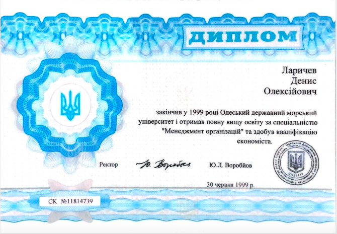
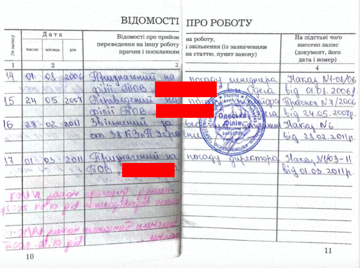

Кандидат № 1

Ім'я:
Денис
Прізвище:
Ларичев
Освіта:
Повна вища освіта.
1994 - 1999 рр. - Одеський Державний Морський Університет, спеціальність - "Менеджмент Організацій"
1994 - 1999 рр. - Одеський Державний Морський Університет, спеціальність - "Менеджмент Організацій"

Трудова діяльність:

Програма:
Короткостроковий план:
- фінансовий аудит;
- земельний аудит;
- аналіз енергетичної ситуації та аналіз споживання;
- аналіз ситуацій з водопостачанням та її витрат;
- аналіз енергетичної ситуації та аналіз споживання;
- аавтоматизація передачі та навчання даних "члени - правління - члени"
Довгостроковий план:
- онлайн голосування, онлайн збори;
- онлайн комунікація "члени - правління";
- підвищення інвестиційної привабливості СОГ "ВЕТЕРАН";
- отримання всіма членами СОГ "ВЕТЕРАН" індивідуальних абонентських рахунків за електроєнергію, водопостачання;